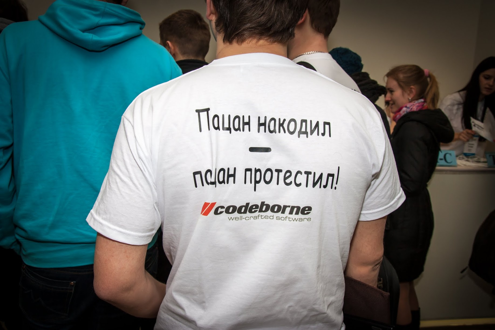
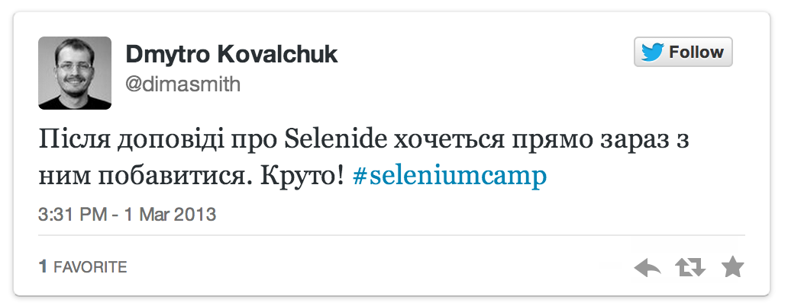

Selenide
Андрей Солнцев

#asolntsev
Программер
Selenide.org
author
Повестка дня
- Selenide год назад
- Selenium Camp 2013
- Новинки в Selenide от разработчиков
- Новинки в Selenide от тестировщиков
Selenide
=выразительные тесты
на Selenium WebDriver
Selenide
- Выразительные тесты
- Читаемые
- Без мусора
Сосредоточься на бизнес-логике!
Selenium + API = SELENIDE
selenide.org
@Test
public void userCanLogin() {
open("/login");
$("#username").setValue("john");
$(by("type", "submit")).click();
$(".menu").shouldHave(text("Hello, John!"));
}
Проблемы UI-тестов
- Чёртов Ajax
- Ужас поддержки
- Читаемость тестов
Selenide
поможет!
Решения: Ajax
Все should-методы ЖДУТ наступления события.
$(".loading_progress").shouldBe(visible);
$("#menu").shouldHave(text("Hello, John!"));
$(By.name("sex")).shouldNotBe(selected);
Забудь
про AJAX!
SeleniumCamp 2013
Видео | Фото | StorifySeleniumCamp 2013
SeleniumCamp 2013
SeleniumCamp 2013
Честно не понял, почему они сделали Selenide именно так,
но подход имеет право на жизнь.
Проблемы UI-тестеров
- Чёртов Ajax
- Отчёты / Скриншоты
- BDD
- Степы
- Page Objects
- Параллелизация
Как всё
сложно!
Особенности Selenide
- Библиотека (не фреймворк)
- Быстрый старт
- Совместим с: JUnit, TestNG, ... - всё что угодно!
- Совместим с: Java, Scala, Groovy, ... - любые JVM
- Dog Food
- Максимум пользы при минимуме кода
- Используется в реальных проектах
- Решает основные проблемы UI тестов
История Selenide
- Попробовали Selenium WebDriver
- Нафигачили вспомогательных методов
- Вынесли в open-source
- 1.5 года шлифовали в реальных проектах
- И вот мы на Selenium Camp!
Selenide
vs
Selenium WebDriver
WebDriver
DesiredCapabilities cap = htmlUnit();
cap.setCapability(INVALIDSELECTIONERROR, true);
cap.setCapability(INVALIDXPATHERROR, false);
cap.setJavascriptEnabled(true);
WebDriver driver = new HtmlUnitDriver(cap);
open("/my-application/login");
- firefox
- chrome
- htmlunit
- phantomjs
- ie
- opera
Find element
WebElement customer =
driver.findElement(By.id("customerContainer"));
WebElement customer = $("#customerContainer");
Text check
assertEquals("Customer profile",
driver.findElement(
By.id("customerContainer")).getText());
$("#customerContainer").shouldHave(
text("Customer profile"),
text("John"),
cssClass("active-profile"));
Ajax support
FluentWait<By> fluentWait = new FluentWait<By>(By.tagName("TEXTAREA"));
fluentWait.pollingEvery(100, TimeUnit.MILLISECONDS);
fluentWait.withTimeout(1000, TimeUnit.MILLISECONDS);
fluentWait.until(new Predicate<By>() {
public boolean apply(By by) {
try {
return browser.findElement(by).isDisplayed();
} catch (NoSuchElementException ex) {
return false;
}
}
});
assertEquals("John", browser.findElement(By.tagName("TEXTAREA")).getAttribute("value"));
Ajax support
$("TEXTAREA").shouldHave(value("John"));
Page Objects extension
public class SignupPage {
@FindBy(name = "email")
public SelenideElement email;
@FindBy(name = "password")
public SelenideElement password;
@FindBy(id = "signup")
private SelenideElement signup;
public DashboardPage loginValid() {
signup.click();
return page(DashboardPage.class);
}
}
Page Objects extension
@Test
public void afterSignupUserLandsOnDashboard() {
open("/signup");
SignupPage signupPage = page(SignupPage.class);
signupPage.email.shouldHave(value(""))
.val("existing@email.com");
signupPage.password.shouldHave(value(""))
.val("validPassword");
DashboardPage dashboardPage =
signupPage.signupValid();
// do some dashboard page assertions
}
Демо

Листинг карт
- Пользователь видит список добавленных карт сторонних банков (номер, имя держателя, состояние)
Удаление карты
- Пользователь может удалить карту стороннего банка
Активация карты
- Чтобы иметь возможность оплатить услуги пользователь должен активировать карту, введя зарезервированную сумму
- В целях безопасности в случае неверного ввода зарезервированной суммы карта удаляется
Наш подход к написанию UI тестов
-
Стремимся UI тесты делать быстрыми, для этого
- используем in-memory базу данных
- заглушаем реальные сервисы, если их не можем контроллировать
- используем упрощённый логин
- используем сессию повторно
-
Но не забываем о стабильности тестов
- тесты не зависят друг от друга
- UI тесты являются частью билда
Спасибо!
- Вопросы
- Ответы
- Комментарии

selenide.org